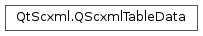

QScxmlTableData¶
Detailed Description¶
The
PySide2.QtScxml.QScxmlTableDataclass is used by compiled state machines.
PySide2.QtScxml.QScxmlTableDatais the interface to the compiled representation of SCXML state machines. It should only be used internally and by state machines compiled from SCXML documents.
-
class
PySide2.QtScxml.QScxmlTableData¶
-
PySide2.QtScxml.QScxmlTableData.assignmentInfo(assignmentId)¶ Parameters: assignmentId – PySide2.QtCore.intReturn type: PySide2.QtScxml.QScxmlExecutableContent::AssignmentInfoReturns the
QScxmlExecutableContent.AssignmentInfoobject for the givenassignmentId.
-
PySide2.QtScxml.QScxmlTableData.dataNames(count)¶ Parameters: count – PySide2.QtCore.intReturn type: PySide2.QtCore.intRetrieves the string IDs for the names of data items in the data model. The number of strings is saved into
countand a pointer to an array of string IDs is returned.Returns a pointer to an array of string IDs.
-
PySide2.QtScxml.QScxmlTableData.evaluatorInfo(evaluatorId)¶ Parameters: evaluatorId – PySide2.QtCore.intReturn type: PySide2.QtScxml.QScxmlExecutableContent::EvaluatorInfoReturns the
QScxmlExecutableContent.EvaluatorInfoobject for the givenevaluatorId.
-
PySide2.QtScxml.QScxmlTableData.foreachInfo(foreachId)¶ Parameters: foreachId – PySide2.QtCore.intReturn type: PySide2.QtScxml.QScxmlExecutableContent::ForeachInfoReturns the
QScxmlExecutableContent.ForeachInfoobject for the givenforeachId.
-
PySide2.QtScxml.QScxmlTableData.initialSetup()¶ Return type: PySide2.QtCore.intInitializes the table data. Returns the ID of the container with instructions to be executed when initializing the state machine.
-
PySide2.QtScxml.QScxmlTableData.instructions()¶ Return type: PySide2.QtCore.intReturns a pointer to the instructions of executable content contained in the state machine.
-
PySide2.QtScxml.QScxmlTableData.name()¶ Return type: unicode Returns the name of the state machine.
-
PySide2.QtScxml.QScxmlTableData.serviceFactory(id)¶ Parameters: id – PySide2.QtCore.intReturn type: PySide2.QtScxml.QScxmlInvokableServiceFactoryReturns the service factory that creates invokable services for the state with the ID
id.
-
PySide2.QtScxml.QScxmlTableData.stateMachineTable()¶ Return type: PySide2.QtCore.qint32Returns a pointer to the complete state table, expressed as an opaque sequence of integers.
-
PySide2.QtScxml.QScxmlTableData.string(id)¶ Parameters: id – PySide2.QtCore.intReturn type: unicode Returns a
PySide2.QtCore.QStringfor the givenid.
© 2018 The Qt Company Ltd. Documentation contributions included herein are the copyrights of their respective owners. The documentation provided herein is licensed under the terms of the GNU Free Documentation License version 1.3 as published by the Free Software Foundation. Qt and respective logos are trademarks of The Qt Company Ltd. in Finland and/or other countries worldwide. All other trademarks are property of their respective owners.